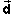
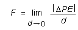
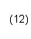
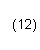
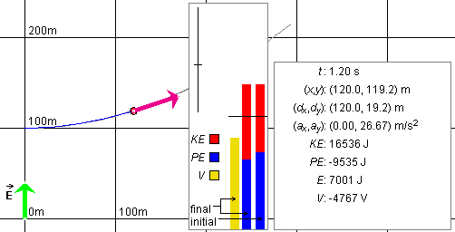
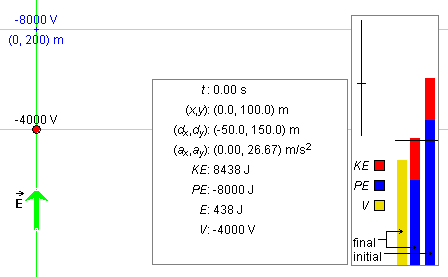

Prerequisites
Students should be familiar with the concepts of charge, electric field, and electric field lines, and Coulomb's law of electrostatics and Newton's second law of motion.
Learning Outcomes
Students will be able to review the definition of the electric field, will be introduced to the concepts of electric potential and potential energy in an electric field, and the relationship between electric field and electric potential and the parallel relationship between electric force and electric potential energy. They will learn to apply these concepts.
Instructions
Students should know how the applet functions, as described in Help and ShowMe.
The applet should be open. The step-by-step instructions in the following text are to be done in the applet. You may need to toggle back and forth between instructions and applet if your screen space is limited.
 Laws, Theorems,
Definitions
Laws, Theorems,
Definitions
 Newton's Second Law of
Motion
Newton's Second Law of
Motion
 Coulomb's Law of
Electrostatics
Coulomb's Law of
Electrostatics
 Definition of Electric Field
and Electric Field Lines
Definition of Electric Field
and Electric Field Lines
 Definition of Electric
Potential and Equipotential Lines
Definition of Electric
Potential and Equipotential Lines
 Potential Energy and Energy
Conservation
Potential Energy and Energy
Conservation
 Motion of a Charged Particle in
a Uniform Electric Field
Motion of a Charged Particle in
a Uniform Electric Field
 Electric Potential and
Equipotential Lines
Electric Potential and
Equipotential Lines
 Electric Potential and
Potential Energy
Electric Potential and
Potential Energy

Newton's Second Law of Motion
The sum of all forces1,
,
(1)

Any two particles carrying electric charges q1 and q2 exert electrostatic forces on each other. If the two charges have the same sign, the particles exert repulsive forces on each other. If they have opposite sign, the forces are attractive. The force exerted on Particle 1 has the same magnitude F as the force exerted on Particle 2, equal toF = k|q1||q2| / d2
where d is the separation between the two particles and k is a universal constant whose value is
k = 8.988×109 N m2 C-2.
Comment. The force 12 exerted on
particle 1 by particle 2 is proportional to the charges
q1 and q2 of these
particles while the magnitude F of this force, as
given by Expression (2) above, depends only on the
magnitudes of these charges. 12 depends on the charges themselves,
not only their magnitudes, because reversing the sign of
one of these charges reverses the direction of the vector
12. The same is true, of course, for
21, the force exerted on particle 2
by particle 1.
If
=
is called the electric field at the given point.
Comment 1. Electric fields produced by source
charges at rest, i.e., fields that are superpositions of
fields due to point charges at rest, are called
electrostatic fields. Coulomb's law implies that
the force exerted on a charged test particle in
such a field is proportional to the charge q of
the test particle.
Therefore, for an electrostatic field, dividing
by q in Definition (4) gives a
quantity that is independent of
q. Thus, characterizes an "electric
intensity" that is present without the test particle
and does not depend on any properties of the test
particle.
This is true in general for all kinds of electric fields, not only electrostatic fields, but also so-called induced electric fields that are due to changing magnetic fields.
Comment 2. Solving Equ.(4) for
gives the force exerted on a particle carrying charge
q in an electric field ,
= q . (5)
(5)
When one obtains force expression (5) in this way, it may seem to amount to nothing more than the definition of the electric field. However, it is not trivial that in a general electric field the force exerted on a test particle is proportional to the particle's charge q (or that the ratio in Definition (4) is independent of the charge in more general than just electrostatic cases).
Comment 3. Definition (4) implies that the SI-unit of the electric field is N/C. This unit is equal to the unit V/m, which is discussed in Comment 1 under "Electric Potential and Equipotential Lines" below.
Comment 4. The electric field is defined at all
points in space. It is therefore not a single vector, but
a "vector-valued function defined on space". This simply
means that to describe the electric field one must
specify the vectors at all points in space.
Comment 5. An electric field line is a line (not a straight line in general) that indicates the direction of the electric field vectors at points along the line.
The electric field vector at a given point on an electric field line is tangential to the line at that point.
A static electric field, i.e., a field accompanying one or more source charges at rest, has the property that it can be derived from a simpler field called the electric potential. The electric potential field is simpler because it is a scalar field, not a vector field like the electric field. The electric potential field assigns a scalar quantity to any given point in space called the electric potential at that point. The SI-unit of the electric potential is the volt (V).
How can a scalar field give rise to a vector field? A static electric field is constructed from its electric potential field as follows.
Suppose you know the electric potential field and want to know the electric field vector at a given point P. Look at the electric potential in the neighborhood of P. Find the direction leading away from P in which the electric potential decreases more rapidly than in any other direction. This is the direction in which the electric vector at P points.The magnitude E of the electric vector at P is equal to the magnitude of the distance-rate-of-change of the electric potential,

where |DV| / d is calculated in the direction of the electric field vector at P. |DV| equals |V(P') - V(P)| where P' is a point near P that, seen from P, lies in the direction of most rapid decrease of V and where d is the distance between P and P'.
If the electric potential is constant throughout a small neighborhood of P or if the electric potential has a maximum or minimum at P, the electric field at P is zero.
Comment 1. Definition (6) implies that the SI-unit for the electric field is the V/m. As mentioned in Comment 3 under "Definition of Electric Field and Electric Field Lines" above, Definition (4) gives the N/C as the SI-unit of the electric field. Equating the two units and solving the resulting equation for V gives the volt in terms of other SI-units,
1 V = 1 m × 1 N/C = 1 (N m)/C = 1 J/C. (7)
(7)
Comment 2. For a uniform field, the limit in Definition (6) is not necessary and one can calculate E from "E = |DV| / d" for finite d. This equation can be inverted to give the change DV = V(P') - V(P) in electric potential in going from point P to P'. If P', when seen from P, is in the direction of the electric field, i.e., in the direction of most rapid decrease of V, then
DV = V(P') -
V(P) = -Ed (8)
(8)
where d is the distance between P and P'. The minus sign on the right-hand side is needed because the potential is decreasing in going from P to P'.
If the points P and P' are two general points that do not
necessarily lie on the electric field line through P and
P', Equ.(8) must be generalized by replacing the
right-hand side by the scalar product of and
the displacement  from P to P'. Thus,
DV = -  .
.
 (9)
(9)
Comment 3. In general, the potential in the vicinity of a given point P will be decreasing in some directions, increasing in others, and remain constant along a line through P dividing the directions of decreasing and increasing potential. This dividing line is the "equipotential line" through P.
An equipotential line is a line along which the electric potential is constant.
Such lines are not straight in general. However, in the present case of a uniform field, the equipotential lines are straight lines perpendicular to the electric field lines.
Note that one is dealing with equipotential lines when considering only two dimensions. In three dimensions, one has equipotential surfaces. In a uniform field in three dimensions, the equipotential surfaces are planes perpendicular to the electric field lines.
Comment 4. The electric field vector at a given point is always perpendicular to the equipotential line through that point because the perpendicular direction is the direction of most rapid change of the potential. As a consequence, electric field lines and equipotential lines cross at right angles at any given point.
This section focusses on the definition of the potential
energy PE of a charged particle in an electric
field and the relationship between PE
and the force exerted on the particle by the
field.
If you have mastered the preceding section, this material
is easy because PE and are
equal to the corresponding quantities V and
, respectively, multiplied by the charge
q of the test particle. Thus,
PE = qV  (10)
(10)
and
= q .  (11)
(11)
Comment 1. Equ.(11) is the same as Equ.(5). Equ.(10) is a definition of the potential energy in terms of the electric potential.
Comment 2. The vector is
different in general at different points in space. So is
the force a function of position. Thus, Equation
(11) defines a force field. In this applet, this
force field is uniform, i.e., is
the same vector at all points.
Since the electric potential is a scalar field, Definition (10) makes the potential energy of a test particle a scalar field as well. All this means is that the potential energy is a scalar quantity whose value depends in general on where the test particle is.
Comment 3. The electric field points from high to low potential, in the direction of the most rapid decrease of the potential. Because of Eqs.(10) and (11), the force points from high to low potential energy, in the direction of the most rapid decline of the potential energy. This statement is obviously true for positive charge q, but it is true also for negative charge. Why?
Comment 4. Equ.(7) says that the volt is equal to 1 J/C. Therefore, the SI-unit of the quantity PE defined in Equ.(10) is C × J/C = J. The joule (J) is the unit of energy. Thus, PE has the right units to be some kind of energy. The next two comments will make it clear that PE is indeed a potential energy.
Comment 5. By multiplying Equs.(6), (8), and (9)
on both sides by q one obtains analogous equations
relating the force exerted on the charged
particle to the potential energy PE of the
paricle in the field.
Thus, the magnitude F of the force is given by
  

For a uniform field, the limit in Equ.(12) is not necessary and one can calculate F from "F = |DPE| / d" = for finite d. This equation can be inverted to give the change DPE = PE(P') - PE(P) as
DPE = PE(P') -
PE(P) = -Fd . (13)
(13)
Here P', when viewed from P, is in the direction of most rapid decrease of PE.
If the points P and P' are two general points that do not
necessarily lie on the same electric field line, Equ.(13)
must be generalized by replacing the right-hand side by
the scalar product of and the displacement
from P to P'. Thus,
DPE = PE(P') -
PE(P) = - .  (14)
(14)
The scalar product in Equ.(14), or the product
Fd in Equ.(13), is equal to the work W
done by the electric field on the particle when the
particle moves from P to P'. Thus,
DPE = PE(P') -
PE(P) = - W.  (15)
(15)
This is precisely the standard definition of a potential energy. First of all, one defines potential energy in terms of its change, DPE; one does not directly define the potential energy PE itself. This leaves an additive constant in the potential energy undetermined that one is free to choose any way that is convenient. Second, if a potential energy can be associated with a force field (possible for special force fields only that are called conservative), then it is the negative of the work done by the force that is equated with the change in the potential energy. The reason why one uses the negative of the work in the definition of potential energy will be made clear in the following comment.
Comment 6. By the work-kinetic energy theorem, the work W done on the particle by the electric field is equal to the change DKE in the particle's kinetic energy as the particle moves from P to P',
W = DKE =
KE(P') - KE(P) . (16)
(16)
Substituting Expression (16) for W into Equ.(15) gives
DPE = - DKE . (17)
(17)
In words, if the test particle in moving from P to P' gains an amount DKE of kinetic energy, then its potential energy changes by an amount equal to -DKE, i.e., it decreases by an equal amount.
This is exactly the concept of potential energy. A particle has potential energy that can be converted into kinetic energy. If the kinetic energy increases by, say, 5 J, the potential energy decreases by 5 J. Energy gets converted from potential to kinetic energy, and energy is neither created or destroyed. Energy conservation in this process can be exhibited more directly as follows.
Let E denote the sum of kinetic and potential energy,
E = KE + PE . (18)
(18)
The quantity E is called the energy of the particle in the electric field. The change DE in the energy as the particle moves from P to P' can be found by moving DKE in Equ.(17) from the right-hand side to the left-hand side. Thus,
DKE + DPE = DE = 0 . (19)
(19)
This equation says that E does not change when the particle moves from P to P'. One says that the energy is conserved.
Task 1. Under "Laws, Theorems, Definitions" above, read the section "Definition of Electric Field and Electric Field Lines".
Exercise 1. RESET  the applet.
the applet.
Set the particle's initial position and velocity at time t = 0 to
Lock these initial values by clicking the Initial button  . Display the velocity vector by selecting
Velocity from the Vector panel. Open the panel by selecting the
Vectors button
. Display the velocity vector by selecting
Velocity from the Vector panel. Open the panel by selecting the
Vectors button  .
.
You may find it easier to move the particle to its initial position if you display the grid. The particle's position coordinates are displayed in the Data box.
Make sure the parameters of the system are set to
Display the particle trace, and PLAY the motion.
Describe the trajectory. In which direction relative to that of the electric field does the trajectory curve? Therefore, in which direction is the force acting on the particle? Hint: The acceleration vector is in the direction of the force, according to Newton's second law. The applet lets you display the acceleration vector.
Explain your observations in terms of the theory under "Definition of Electric Field and Electric Field Lines".
Answer. Figure 1 below shows the trajectory, with the particle paused on it.

Figure 1
The trajectory curves in the direction of the electric field, indicating that the force is in the direction of the electric field. Displaying the acceleration vector confirms this. For a positively charged particle, Equ.(5) implies that the force is in the direction of the electric field.
Question 1. For the settings in Exercise 1, what is the particle's acceleration? Calculate its value from basic principles.
Answer. When force expression (5) is inserted in the
Newton's second law equation (1), one obtains an equation
involving the particle's acceleration .
Solving this equation for gives
= (q/m)
. (20)
(20)
Inserting the given values gives
= 2/3×(0, 40) = (0, 26.67) m/s2
. (21)
(21)
Compare this value with the one shown in the Data box.
Exercise 2. Continuing from Exercise 1, click REWIND and change the value of the charge from q = 2 C to q = -2 C.
PLAY the motion, and observe the trajectory. Which way does it curve relative to the electric field vector? Explain your observation in terms of basic theory.
Calculate the acceleration vector, and compare your result with that shown in the Data box.
Exercise 3. Continuing from Exercise 2, i.e., with
q = -2 C, click REWIND and reverse the electric field
vector to = (0, -40) V/m.
PLAY the motion, and observe the trajectory. Which way does it curve relative to the electric field vector? Explain your observation in terms of basic theory.
Calculate the acceleration vector, and compare your result with that shown in the Data box.
Exercise 4. Continuing from Exercise 3, investigate
the motion when the charge is either q = 2 C or
q = -2 C and the electric field directed horizontally
with = (40, 0) V/m or = (-40, 0) V/m.
Explain your observations in terms of basic theory, and calculate the acceleration in all cases.
Task 1. Under "Laws, Theorems, Definitions" above, read the section "Definition of Electric Potential and Equipotential Lines".
Exercise 1. RESET the applet.
Select the Coordinates button  , and click in the applet window to set a field point
marker. With the marker, the (x,y)-coordinates
of the point and the electric potential V at that
point will be displayed.
, and click in the applet window to set a field point
marker. With the marker, the (x,y)-coordinates
of the point and the electric potential V at that
point will be displayed.
Click the Field-Line button  and the Equipotential-Line button
and the Equipotential-Line button  to display the electric
field line (in green) and the equipotential line (in mustard
color) through the point.
to display the electric
field line (in green) and the equipotential line (in mustard
color) through the point.
Drag the field point, and observe how the field line and equipotential line moves along with the point. Based on these observations, draw a pattern of electric field lines and equipotential lines in your Notebook.
Answer. The electric field lines should be parallel to the electric field vector, i.e., paralell to the y-axis and the equipotential lines should be perpendicular to the field lines, i.e., parallel to the x-axis. An example of such a line pattern is shown in Figure 2 below.

Figure 2
Question 1. The applet assumes that the value 0 V has been chosen for the electric potential V at the origin (x,y) = (0, 0) m. What is the value of V directly above the origin at (x,y) = (0, 100) m? Calculate the value using the theory under "Definition of Electric Potential and Equipotential Lines".
Answer. The point P' at (x,y) = (0, 100) m is on the same electric field line as the origin and, seen from the origin, is in the direction of the electric field vector. Therefore, the direction from the origin to the point P' is the direction of most rapid decrease of the electric potential. This means we can use Equ.(8) to calculate the potential at P'. (P is the origin in this case.) Thus,
V(P') = V(P) - Ed = 0 - 40×100 =
-4,000 V. (22)
(22)
Confirm this value with the applet by moving the particle to point P'. Make sure the Coordinates button is deselected before you try to move the particle. The value of V at the location of the particle is displayed in the Data box. Also observe the length of the V-column in the Energy box as you move the particle to P'.
Exercise 2. Continuing from Question 1, with the particle at point P' with coordinates (x,y) = (0, 100) m, change the charge of the particle from q = 2 C to q = -2 C. Observe the value of V displayed in the Data box and the length of the V-column in the Energy box. Explain your observations in terms of basic theory.
Answer. Neither the electric field nor the electric potential depend in any way on the properties of the test particle. They characterize the state of space without the test particle. Therefore, changing the charge of the test particle has no effect on the value of the electric potential at the particle's location.
Exercise 3. Continuing from Exercise 2, reverse the
electric field from = (0, 40) V/m to = (0,
-40) V/m. Observe the value of V in the Data box and
the length of the V-column in the Energy box, and
explain your observations in terms of basic theory.
Answer. With the electric field pointing downward, point P' at (x,y) = (0, 100) m when seen from the origin lies in the direction opposite to that of the electric field, and therefore in the direction of most rapid increase of the electric potential. Thus, in the calculation in Equ.(22) the minus sign on the right-hand side must be replaced by a plus sign. Thus, V(P') is now equal to +4,000 V.
Exercise 4. RESET the applet. Display the field lines and equipotential lines through the points (x,y) = (0, 100) m and (x,y) = (0, 200) m. To set a field point marker at these points, it helps to display the grid. At the end, hide the grid again.
Deselect the Coordinates button, move the particle to (x,y) = (0, 100) m, and hide the velocity vector. Figure 3 below illustrates what you should see.

Figure 3
Hold down the SHIFT key, and drag the particle horizontally along the equipotential line at y = 100 m. Observe the value of the potential V in the Data box and the length of the V-column in the Energy box. Explain your observations.
Answer. There should be no change in V since you are moving the particle along an equipotential line.
Exercise 5. Continuing from Exercise 4, return the particle to (x,y) = (0, 100) m. This time, drag it a fixed distance d, equal to the spacing between the two equipotential lines in Figure 3, but in different directions. Observe the change in electric potential in each direction, and explain your observations.
Answer. Since you are going to have to judge the distance d by eye through which you move the particle, the observations will be somewhat qualitative. However, you should be able to observe roughly that the largest decrease of V occurs when you move the particle upward along the electric field line to (x,y) = (0, 200) m. The electric potential field is constructed so that the most rapid decrease of the electric potential is in the direction of the electric field.
Question 2. What is the potential change DV when you move the particle from a point P with coordinates (x,y) = (0, 100) m to a point P' with coordinates (x,y) = (200, 200) m, given that (Ex,Ey) = (0, 40) V?
Answer. In going from P to the point straight above P at (x,y) = (0, 200) m, one moves in the direction of the electric field so that a calculation analogous to that in Equ.(22) applies. There is no further potential change in going from (x,y) = (0, 200) m to (x,y) = (200, 100) m because this stretch is along an equipotential line. Therefore,
DV = -Ed =
-40×1000 = -4,000 V . (23)
(23)
Here, d = 100 m is the distance from P to the point directly above P at (x,y) = (0, 200) m.
Adding this potential change to the potential at P, which is -4,000 V, gives -8,000 V as the potential at P'. You can check this value with the applet.
Task 1. Under "Laws, Theorems, Definitions" above, read the section "Potential Energy and Energy Conservation".
Exercise 1. RESET the applet.
Set the particle's initial position and velocity at time t = 0 to
Fix these initial values by clicking the Initial button. This will also adjust the "initial" energy bar in the Energy box to be identical to the "final" energy bar.
You may find it easier to move the particle to the initial position if you display the grid. The particle's position coordinates are displayed in the Data box. You may also want to display the velocity vector by selecting Velocity from the panel that is opened by selecting the Vectors button.
Make sure the parameters of the system are still set to
Display the particle trace, and STEP into the motion four times until you are at time t = 1.20 s and the particle is at (x,y) = (120, 119.2) m, as shown in Figure 4 below. The Energy box in Figure 4 shows what the energy bars should look like at this moment.
Figure 4
In your Notebook, describe the changes you observe in the particle's potential energy PE, kinetic energy KE, and total energy E as you step through the motion. Discuss if the changes are what you expect from basic theory. Also describe the change in the electric potential V at the particle's position as you step through the motion, and explain it in terms of basic theory.
Answer. The potential V decreases as the motion proceeds because the particle moves both in the direction of the electric field and "sideways". The "sideways" motion, i.e., the x-component of the motion, takes the particle to points of equal potential because it is perpendicular to the direction of the electric field. However, the y-component of the motion, which is in the direction of the electric field, takes the particle to points of lower electric potential.
Since the particle's charge is positive, Definition (10) implies that the particle's potential energy behaves like the potential: it decreases as the motion proceeds. Since the total energy is conserved, the kinetic energy must increase by as much as the potential energy increases. The particle gets faster.
Question 1. Given that the potential at the starting point of the motion, at (x,y) = (0, 100) m, is equal to -4,000 V, what is the particle's potential energy PE at this point? The particle's charge is equal to 2 C.
Answer. Definition (10) of the potential energy, "PE = qV", gives the value PE = 2×(-4,000) = -8,000 J. Click REPLAY to check this against the value in the Data box.
Question 2. Continuing from Question 1, click REPLAY if you have not already done so and change the charge from q = 2 C to q = -2 C. What are the values of the electric potential at (x,y) = (0, 100) m and of the particle's potential energy at this point now?
Answer. The electric potential is still equal to -4,000 V. Its value does not depend on any particle properties. However, the particle's potential energy has changed to 8,000 J, in accordance with Equ.(10).
Exercise 2. Continuing from Question 2, with q = -2 C, STEP through the motion four times until you are at time t = 1.20 s. What does the trajectory look like this time?
Observe the changes of the same quantities as in Exercise 1 and record in your Notebook if there are any differences compared to what you observed in Exercise 1. Explain the differences in terms of basic theory.
Answer. The trajectory is now a downward curving parabola. The electric potential is increasing along the trajectory because the component of the motion along the electric field direction is opposite to the direction of the field.
The potential energy, however, is decreasing as it did for positive charge in Exercise 1, because a negative charge combined with an increasing potential gives a decreasing potential energy, according to Equ.(10). Also, a particle starting from rest can only have its kinetic energy increasing and therefore must have its potential decreasing.
Question 3. RESET the applet.
Set the particle's initial position and velocity at time t = 0 to
Lock these initial values by clicking the Initial button. This will also adjust the "initial" energy bar in the Energy box to be identical to the "final" energy bar.
Make sure the parameters of the system are set to
Display the particle trace, and STEP into the motion four times until you are at time t = 1.20 s and the particle is at (x,y) = (120, 119.2) m, as shown in Figure 5 below.
Figure 5
Let P be the particle's starting point at (x,y) = (0, 100) m and P' be the point at (x,y) = (120, 119.2) m. Given the value of V at P as -4,000 V, calculate the electric potential at P' and the particle's potential energy, total energy, and kinetic energy at P'.
Answer. The answer is broken up into four segments.
Electric Potential V
As the answer to Question 2 at the end of the preceding section "Electric Potential and Equipotential Lines" shows, to evaluate the change in potential DV in going from P to P', we need to consider only the component of the particle's displacement in the direction of the electric field, i.e., the y-component dy = 19.2 m of the particle's displacement from P to P'.
Since the electric field points from the equipotential line through P to that through P', the minus sign in Equ.(8) is appropriate and we get
DV = -Edy
= -40×19.2 = -768 V. (24)
(24)
Adding this to the electric potential at P gives the potential at P',
V(P') = V(P) + DV = -4,000 -768 = -4,768
V. (25)
(25)
The Data box shows a value of -4,767 V, which differs by 1 V from the value calculated here. This discrepancy is the result of round-off in the displayed value of dy. Suppose dy were really equal to 19.15 m, a value that is consistent within round-off with the displayed value of 19.2 m, the preceding calculation would have given DV = -40×19.15 = -766 V and V(P') = -4,766 V. This value also differs by 1 V from the one displayed in the Data box, but in the other direction.
Potential Energy PE
According to Definition (10) of the potential energy, we only need to multiply the electric potential at P' by the charge q to get the potential energy of the particle at P',
PE(P') = qV(P') = 2×(-4,768) = -9,536
J. (26)
(26)
This value differs by 1 J from that shown in the Data box. This again is due to round-off in the value of dy.
Energy E
The energy of the particle in the electric field is conserved. Therefore, the energy at P' is equal to the energy at P. The latter can be calculated from the given initial conditions.
KE(P) = (m/2)v2 =
(m/2)(vx2 +
vx2) = 3/2×(0 + 1002)
= 15,000 J.  (27)
(27)
PE(P) = qV(P) = 2×(-4,000) = -8,000 J.
 (28)
(28)
Adding the two energies gives the total energy E both at P and at P',
E = KE + PE = 15,000 - 8,000 = 7,000 J
. (29)
(29)
Again, the difference of 1 J between this value and the one displayed for E at point P' in the Data box is the result of the same kind of round-off error mentioned before.
Kinetic Energy KE
The kinetic energy at P' can be obtained by subtracting from the total energy the potential energy at P',
KE(P') = E - PE(P') = 7,000 - (-9,536) =
16,536 J.  (30)
(30)
Exercise 3. Do more calculations analogous to those done in Question 3, by evaluating V, PE, E, and KE at some other point P' on the particle's trajectory and for points P' on other trajectories corresponding to other values of the particle's charge and mass and other values of the electric field.